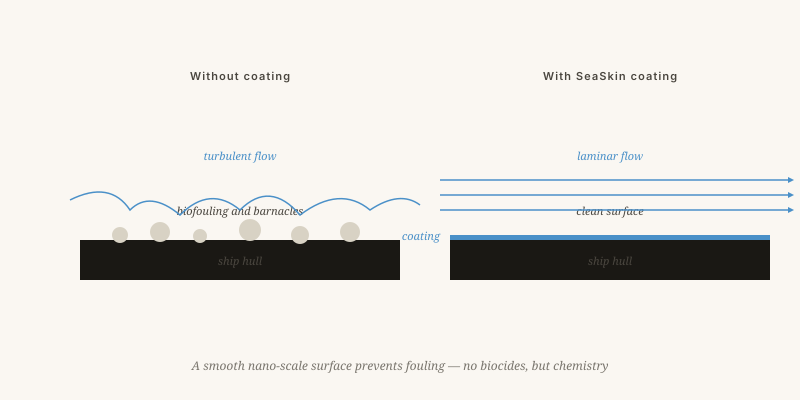

What is already on the shelf
Working or in-development technologies that stem from the same framework: work with nature, not against it.
By Jacobus van Merksteijn · 8 min read · 23 May 2026

The inventor's workshop
Coatings that learn from nature
SeaSkin and SeaSkin++
Antifouling coatings for ships, based on silicones and zwitterions, without biocides. A ship that glides more cleanly through the water uses 5 to 15 per cent less fuel — which for a container ship amounts to hundreds of tonnes of CO₂ per year.
Status: SeaSkin on the market · SeaSkin++ in tests with shipping partners
GuardSkin Foil
A biomimetic foil inspired by shark skin. Built from microscopic ridges that stabilise the boundary layer. The key difference: it is a foil you apply, not a paint you spread. Simpler, thinner, replaceable.
Status: prototypes with European integrators (DACH and southern Europe)

From aircraft fuselage to flat roof
Laminar airflow at scale
A family of five patents: vortex pump, lateral shear, fuselage cascade, acoustics and spray-cleaning. Together they keep the airflow around an aircraft fuselage laminar over a far longer section than is currently possible.
Fuel saving: up to 10% on long-haul flights · Patents filed · Talks with aircraft manufacturers under way
Selective heat rejection for buildings
Coatings that selectively reflect solar heat to reduce cooling loads. Applied to flat roofs in warm regions this can lower air-conditioning demand by 30 per cent or more. The trick: not reflecting all radiation but specifically the infrared.
Status: laboratory formulation complete · scale-up in preparation
Carbon, tyres and fusion
CO₂ back in the ground
Biomass injection into old mine workings to lock CO₂ away for centuries. Instead of composting above ground, you inject it deep — into old mine galleries or purpose-built sites. There the carbon stays fixed for centuries.
Pilot project in Spain (Alquife) and talks in Senegal
Tyres that breathe
Tyres with micro-ventilation for lower rolling resistance and less wear. The tyre core receives micro-channels that vary air pressure — contact pressure becomes more even, wear falls, rolling resistance likewise. Doubly relevant for electric vehicles.
Patents filed including CIP extension
Fusion without a magnetic cage
The design discussed in the article on nuclear fusion. Early stage, conceptual, seeking academic partners for a first experiment. A few million, a good team, and a few years.
Phase: conceptual · partners sought
The impact in numbers
Biomimicry as an engineering discipline
Whoever places these technologies side by side sees one principle returning: work with nature, not against it. A ship that glides more cleanly, an aircraft that moves more gently through the air, a building that manages solar heat, a tyre that breathes.
Technology rarely stalls on technology
The companies bringing these products to market are organised to translate innovation rapidly into product — without the usual decades between idea and application. Technology rarely stalls on the technology itself, but on the organisation surrounding it.
What already exists
Technologies that are working or in development, all resting on the same principle: work with nature, not against it.
SeaSkin and SeaSkin++ are antifouling coatings for ships based on silicones and zwitterions, with no biocides. A ship that glides more cleanly through water uses 5 to 15 per cent less fuel — hundreds of tonnes less CO₂ per year per container ship. GuardSkin is a biomimetic film inspired by shark skin, built from microscopic ridges that stabilise the boundary layer — applied as a film rather than painted on, thinner and replaceable.
AeroSkin is a family of five patents that maintain laminar airflow around an aircraft fuselage over a longer section than currently possible — up to 10 per cent fuel savings on long-haul flights. SolarSkin reflects solar heat selectively on flat roofs, targeting specifically the infrared, reducing air-conditioning load by 30 per cent or more. TerraClean injects biomass into old mine workings for long-term carbon sequestration. Tyre patents with micro-ventilation reduce rolling resistance and wear. The conical vortex reactor is seeking academic partners for a first experiment.
Biomimicry as an engineering discipline
Placed side by side, these technologies share one principle: a ship that glides more cleanly, an aircraft that passes more gently through the air, a building that manages solar heat, a tyre that breathes. Technology rarely stalls on the technology itself — it stalls on the organisation around it. The journey from idea to product still takes far too long.